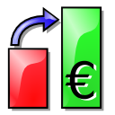

| |
Eqonomize! features
Most persons will probably get a quicker overview of the functionality by looking at the screenshots.
- Bookkeeping
- Bookkeeping by double entry.
- Transactions: expenses, incomes, transfers, and security transactions.
- Transaction properties: description, value, quantity, date, payee/payer, tags, comments, from/to account/category, and additional for securities.
- Split transactions.
- Refunds and repayments.
- Explicit support for loans/debts with interest and fee payments.
- Schedules transactions, with support for a wide range of recurrency schemes, and confirmation of occurrences.
- Support for multiple currencies, with selectable currency for each account. Supported currencies are automatically updated.
- Reconciliation.
- Parameters of the last entered transaction, with the same description (or category or payee/payer), is automatically filled in when a description (or category/payer/payee) is entered (with auto-completion)
- Value input fields support arithmetics and currency conversion.
- Budgeting
- Monthly budget for incomes and expenses categories.
- Ability to exclude categories from the budget.
- Custom start day of budget month.
- Displays previous months performance.
- Predicts future account values based on the budget and scheduled transactions.
- Securities
- Stocks, bonds, and mutual funds.
- Supported transactions: buy and sell of shares, trade of shares between different securities, dividends, and reinvested dividends.
- Displays value, cost, profit and yearly rate, with present total or for a specific period.
- Estimates future value and profit based on previous quotation changes and dividends.
- Statistics
- The main account view displays total values of accounts and categories for at present or a specified date, and value change, as well as budget/remaining budget, for a period.
- Each transaction list displays basic descriptive statistics and supports filtering of transactions based on date, value, category/account, description, and payee/payer.
- Line charts, bar charts and tables for display of change of profits, incomes and expenses over time, for all categories (or tags), a specific category, or a specific description within a category. Can display value, daily average, monthly averge, yearly average, quantity, and average value for a quantity.
- Pie charts, bar charts, and tables for comparison of expenses or incomes between different categories, descriptions or payees/payers. Can display value, daily average, monthly averge, yearly average, quantity, and average value for a quantity.
- Saving, import, and export
- Data is saved in a human readable and editable xml file.
- Flexible QIF import and export.
- Displayed data can be saved to a html or csv file, for display online and editing in a spreadsheet.
- Can import transactions from a csv file, for example a spreadsheet file, with a customizable number of variable transaction parameters.
- Tables can be saved as html files and charts in a number of different image formats, including png and jpeg.
| |